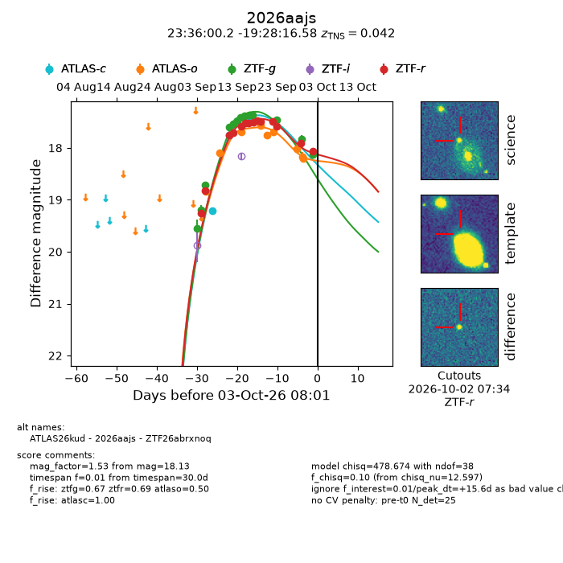
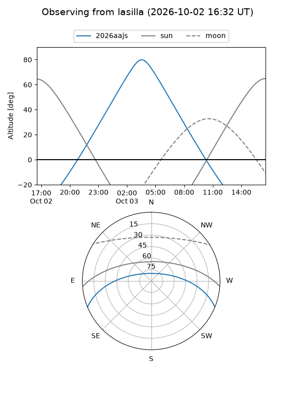
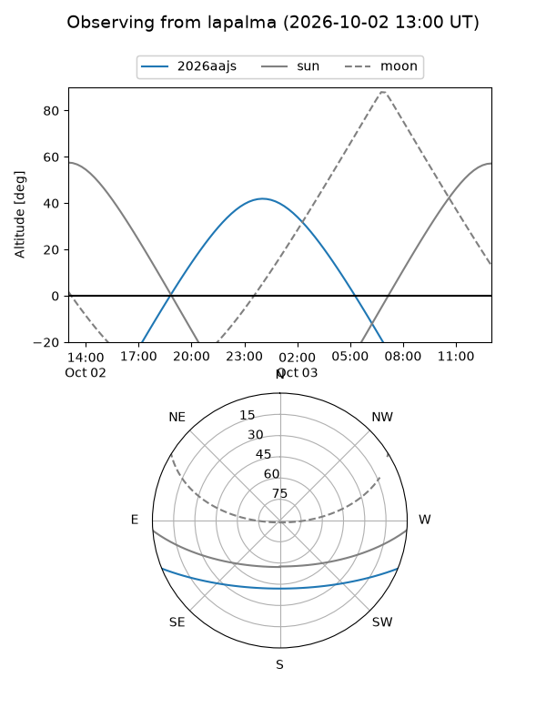
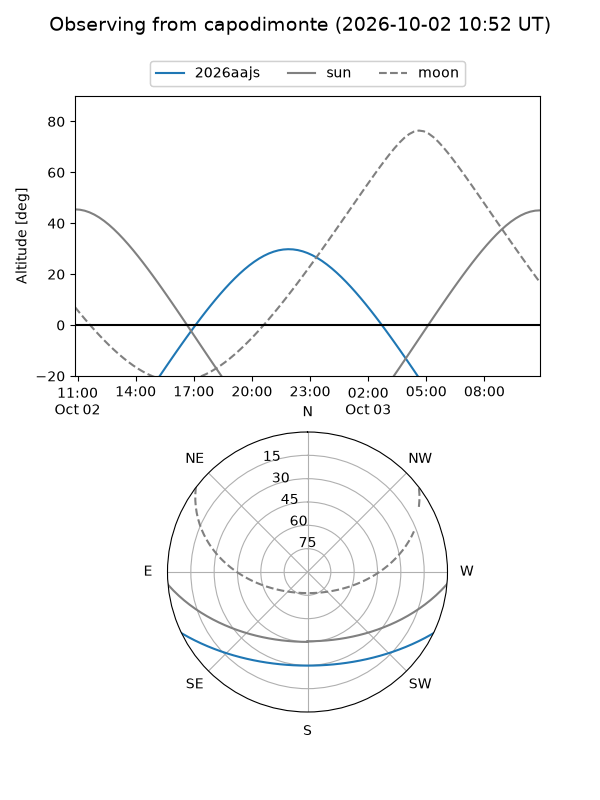
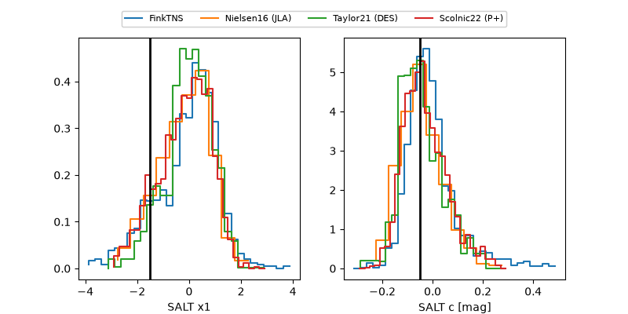

2026aajs
Target 2026aajs at 2026-10-03 08:03
Aliases and brokers:
FINK-ZTF: ztf.fink-portal.org/ZTF26abrxnoq
Lasair-ZTF: lasair-ztf.lsst.ac.uk/objects/ZTF26abrxnoq
ALeRCE-ZTF: alerce.online/object/ZTF26abrxnoq
YSE-PZ: ziggy.ucolick.org/yse/transient_detail/2026aajs
TNS name: wis-tns.org/object/2026aajs
Direct TNS query: direct search
alt names
ZTF26abrxnoq (ztf,fink_ztf)
2026aajs (tns,yse)
ATLAS26kud (atlas)
Coordinates:
equatorial (ra, dec) = 354.0009,-19.47127
equatorial (HMS+DMS) = 23:36:00.20,-19:28:16.58
galactic (l, b) = (52.8065,-71.09205)
Flags:
TNS type: SN Ia
TNS redshift: 0.0420
peak dt: +15.6
Photometry:
last atlasc=17.44, atlaso=18.21, ztfg=18.13, ztfr=18.06
4 atlasc, 9 atlaso, 13 ztfg, 14 ztfr detections
Lightcurve

Visibility



Additional plots
